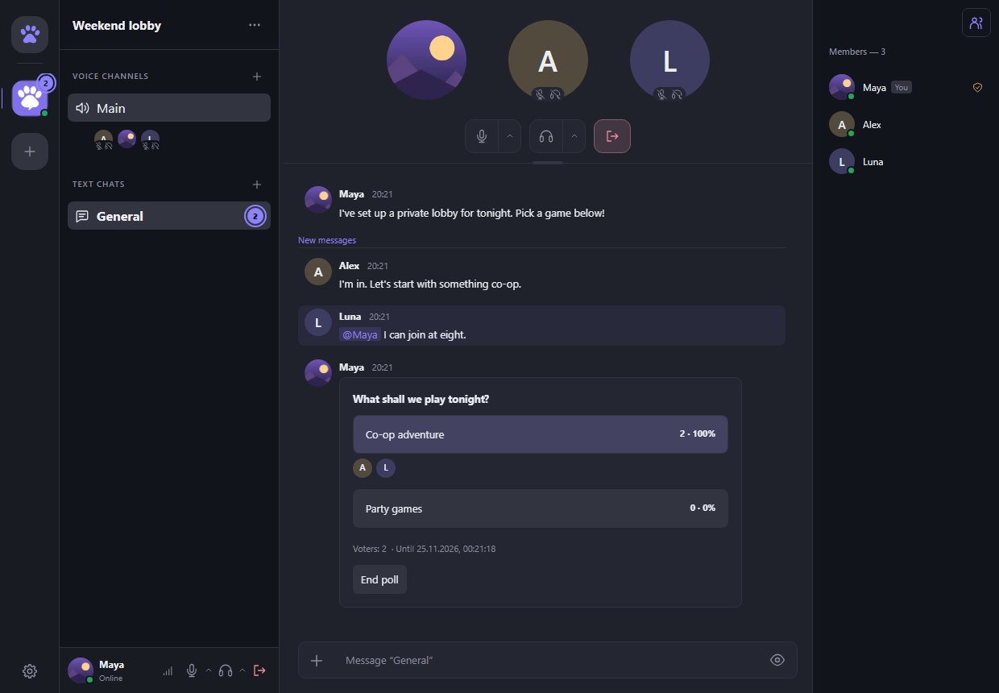
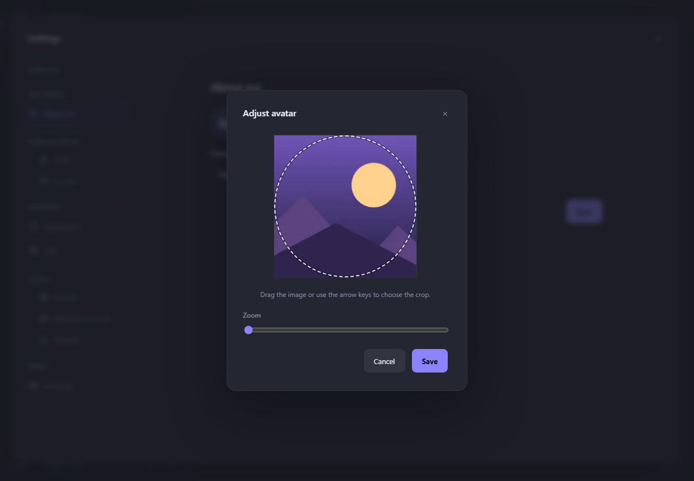
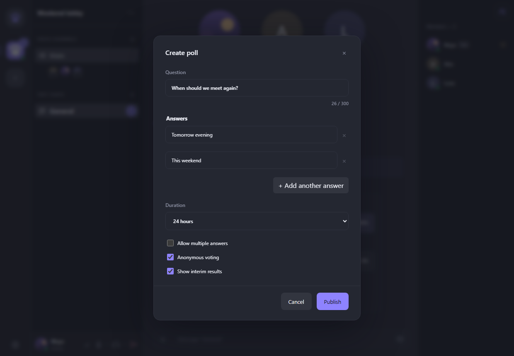
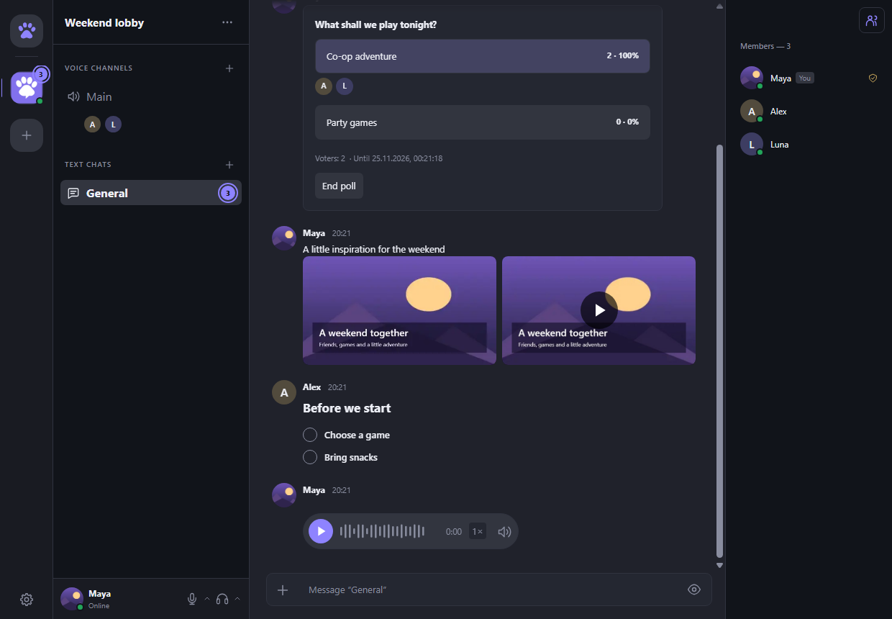
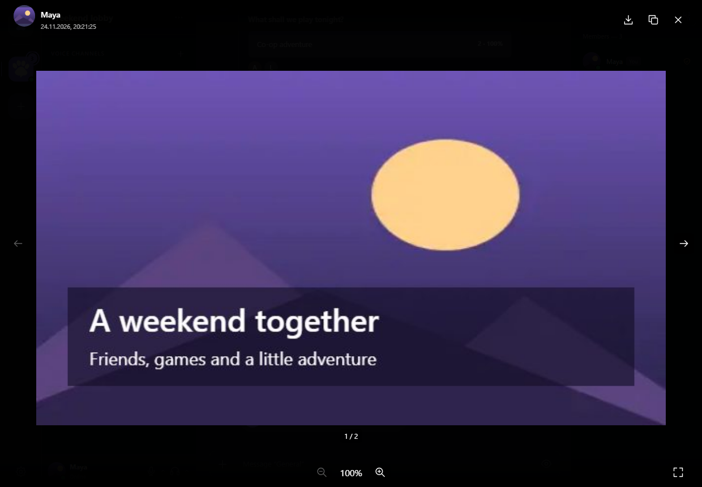
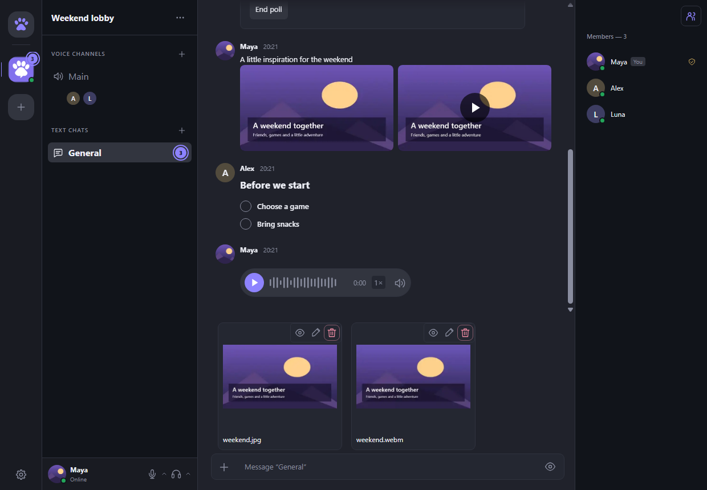
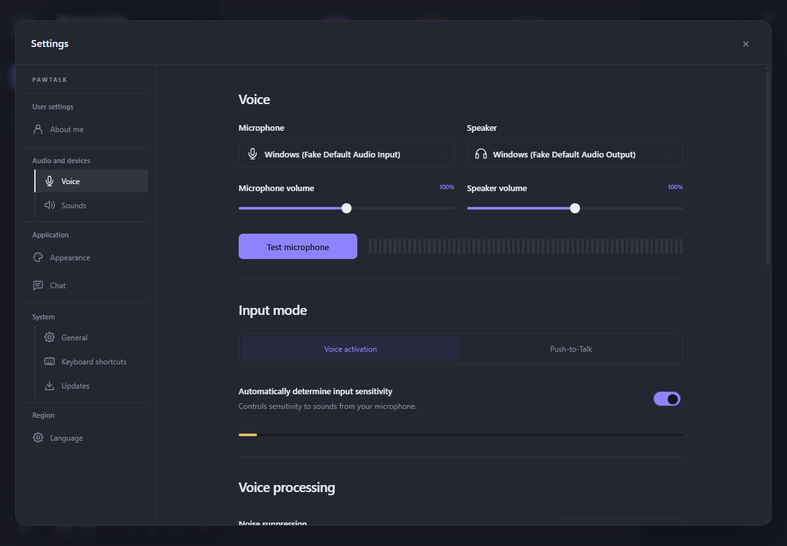
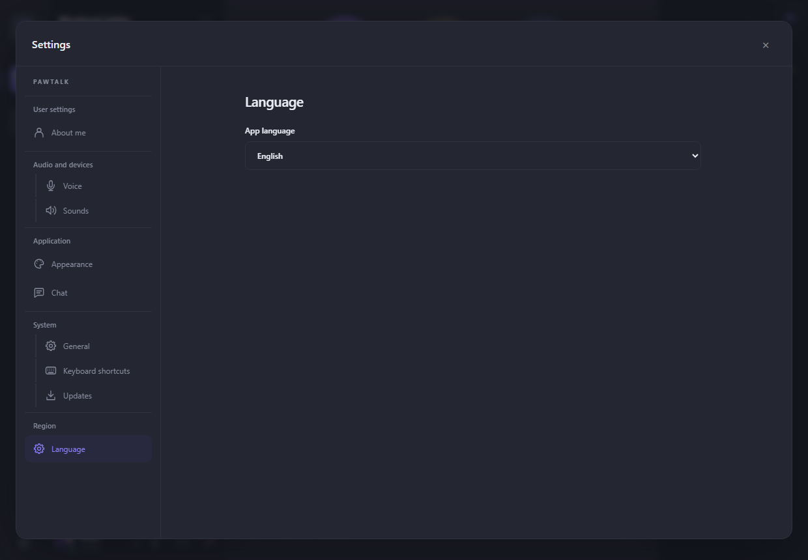
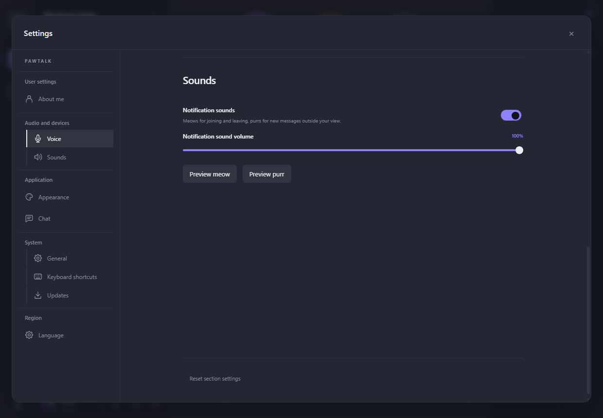

Host it yourself
Temporary Server from Windows Client, or permanent Server managed on Windows/Linux. Your guests just install the client.
Open a voice room for the evening or run a permanent server for your community. Talk, plan and share photos in the same place. Friends join with an invitation and a nickname.
Public preview · Windows x64 Client · Windows/Linux Server Manager
Published versions: Client · Server · Manager
Unsigned installer · Verified automatic updates · Release notes, checksums and source

Temporary Server from Windows Client, or permanent Server managed on Windows/Linux. Your guests just install the client.
Local RNNoise noise suppression, echo cancellation and automatic gain control. Adjust devices, sensitivity and volume.
Give different groups their own voice and text channels. Roles and individual permissions control access on protected servers.
Resize the voice and chat panels. Reply to messages, format selected text and edit your own posts. Protected chats support pinned messages and role-colored mentions on compatible servers.
Mute a chat when you need a break. Windows alerts show the sender’s avatar, and the taskbar badge shows how many notifications are active.
Choose a profile picture, or set a shared server picture as an administrator. The crop preview shows the square boundary and circular safe area.

Create a poll lasting from one hour to two weeks. Allow multiple choices, choose anonymous voting and decide whether to show results before the poll closes. Members can change or withdraw their votes; visible voters appear as avatars.
The author can end a poll early. When it closes, a separate system reply links back to the final result. Completed polls and their results cannot be deleted by members.

Share up to ten attachments in a compact two-column grid. Record a voice message directly in the composer and listen before sending. Add source photos and videos up to 128 MiB. PawTalk compresses larger photos and supported videos up to two minutes to fit the server’s upload limit.
Use an interactive checklist to split up tasks and see everyone’s progress live.

Open photos and videos in one viewer with sender/date, download, gallery navigation and native fullscreen. Zoom into photos, use ← and → to move through the gallery, or adjust video playback and volume.
Thumbnails load separately so you can scan the chat before opening an attachment.

Drop files anywhere over the open chat window. Preview, rename or remove each attachment before sending, then add your message.
The formatting preview replaces the editable message in place. Hover Markdown tools for headings, lists and code, with typed tables supported.

Install the Windows client on each PC and choose English or Russian. In Settings, choose a nickname, select audio devices and test your microphone. No developer tools are needed.
Choose Create server and enter a name. The creator becomes its administrator. New temporary rooms use protected access with channel-specific keys. The temporary server runs while its host is active.
Share the full invitation privately. Your friend pastes it into Join server (Присоединиться к серверу), then enters a voice channel separately. Joining does not automatically unmute a microphone.
Across the internet, the host needs reachable ports. Automatic port mapping may not work behind CGNAT. A permanent Server on Windows or Linux, managed by Server Manager, is an alternative. Read the full setup guide →
Under Audio and devices → Voice, choose your microphone and speakers, try noise suppression and listen to a microphone test. Use voice activation or push-to-talk and adjust each participant’s volume during a call.
Default hosting ports: TCP 18443, TCP 18444, UDP 18445. The server setup guide covers firewall and connectivity checks.

Choose English or Russian under Settings → Language. Settings now have sidebar navigation, a light preset, editable colors and corner sizes. Connection tooltips and status messages follow your choice.
Under System → Updates, turn automatic checks on or off, check manually and see the current version. Update now or defer it; an icon lets you reopen the offer. Downloads are verified before installation, and a separate window shows installation progress.
Client, Server and Manager are released independently. Before upgrading a permanent Server, consult published version compatibility.

This is an early release. Real microphones, clean Windows installations, games/PTT, separate internet networks and full load still need hardware acceptance testing.
Windows desktop client only. Linux is a server platform. Live video calls, screen sharing and web or mobile clients are unavailable. Photo/video attachments and voice messages are supported by compatible Client and Server versions.
Voice, messages and attachments are end-to-end encrypted. API 3 uses channel-specific keys and rotates them when access is revoked. The server sees metadata, and recipients retain copies they already received. Check compatibility before migrating an API 2 room. Security boundaries.
Audio and devices → Sounds has a shared volume for room events and unseen messages, meow and purr previews, and a notification toggle. Voice and Sounds share one page; System groups startup, shortcuts and updates.

For small, self-hosted voice rooms, that is the use case. PawTalk focuses on account-free conversations. It does not replace their broader community features.
Voice uses WebRTC through a LiveKit media server running on the host PC or your VPS. Guests need the Windows client, not their own server.
Check that the room is still running and the invitation is current. Use a LAN invitation on the same network. For internet access, check incoming ports, firewall, router forwarding and VPN. CGNAT may require a publicly reachable VPS. See networking guidance.
PawTalk checks for new releases at startup and verifies each installer before offering it. Report bugs or ask setup questions in GitHub Issues. Include the version and reproduction steps; remove invitations, E2EE secrets and private network information.
The original code is licensed under GNU AGPL-3.0-only. Read the license and third-party notices for the terms that apply.